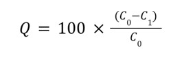

Hexavalent Chromium Adsorption from Water using Shells from Perna viridis (Green Mussel), Crassostrea gigas (Pacific Oyster), Venerupis philippinarum (Manila Clams)
| Author | Rhys Steven L. Felizardo, Kezziah Rexinne P. Barrientos, Gabriel John C. Abelarde, Christian Harvey C. Sestoso, Phillip Raymund R. De Oca |
|---|---|
| Volume | 2 |
| Date Published | December 18, 2023 |
| Date Updated | May 16, 2024 |
Abstract
The adsorption effectiveness of three mollusk shells, Crassostre gigas, Venerupis philippinarum, and Perna viridis, in the removal of hexavalent chromium from water, is presented and compared in this work. The shells were oven dried, crushed, and 8 duplicates with 1000 ppm were agitated with 1 gram of shell powder for 20 minutes before being kept at room temperature for another 18 hours. The shells were oven-dried, ground to a fine powder, and treated with a 1000 ppm Cr6+ solution. The Cr(VI) absorbance were measured using UV-Visible Spectrophotometry, and a one-way ANOVA was used to analyze the data. The results showed that Venerupis philippinarum had the highest adsorption efficiency at 77.397%, removing 0.104 mol/L of Cr(VI) from the initial concentration of 0.146 mol/L. Crassostrea gigas and Perna viridis showed lower adsorption efficiencies with higher final absorbances. The differences in adsorption efficiencies among the three mollusk shells could be attributed to their unique shell composition and surface properties. This study showed that Venerupis philippinarum shells might be used as an efficient and environmentally acceptable adsorbent for the removal of hexavalent Chromium from water.
Introduction
Heavy metal contamination has emerged as a major worldwide environmental concern and a primary focus of environmental security [1]. Any metal (or metalloid) species is a contaminant if it manifests itself in an unintended location or in a way or concentration that has a negative impact on people or the environment. Heavy metals are derived from both natural sources, such as rock weathering, and anthropogenic sources, such as mining, manufacturing, fertilizer and pesticide use, and waste discharge. Lead (Pb), Cadmium (Cd), and Chromium (Cr) are the most typical toxicants found in the marine environment [2]. Though Safe in small amounts, prolonged exposure to heavy metals such as cadmium, copper, lead, nickel, chromium and zinc can be harmful to human health [3].
There are hundreds of aquatic life forms that can greatly benefit humans, but as industrial development continues, many of these aquatic life forms are killed due to contamination, causing many researchers to study toxicants in the marine environment. Hexavalent chromium (Cr(VI)) is a common contaminant found in soils, groundwater, and waste products [13] .When compared to other heavy metals, chromium is currently present in the majority of effluent streams. It occurs in a number of oxidation states such as trivalent chromium, Cr (III), and hexavalent chromium, Cr (VI) [2] . However, of the two chromium states, hexavalent chromium, Cr (VI), is thought to be the most environmentally problematic [2]. Recent studies have shown that chromium is a potential carcinogen, so exposure to this heavy metal is strictly regulated. Chromium toxicity in humans includes metabolic acidosis, acute tubular necrosis, kidney failure, and death [2, 13]. The amount of this polluting, toxic metal is rising at an alarming pace as industrialization progresses. Chromium can enter the environment through a variety of processes, including weathering of Cr-containing rocks, direct discharge from industrial operations, leaching of soils, and reduction, oxidation, desorption, dissolution, and precipitation in aquatic environments[12].To avoid harmful exposure to these heavy metals, people must be knowledgeable about the sources, applications, routes of exposure, toxic effects, and safe exposure levels of these heavy metals as established by World Health Organization (WHO), the United States Environmental Protection Agency (US-EPA), and the Food and Drug Administration (FDA)[11]. The Department of Environmental and Natural Resources (DENR) classifies hexavalent chromium compounds as Priority Chemical List (PCL) substances for serious environmental control and monitoring[11]. Despite this, the presence of chromium content may still be seen[20].
Filtration, chemical precipitation, solvent extraction, ion exchange, adsorption, membrane processing, bioremediation, etc. are just a few of the various treatment methods that can be utilize [4,5]. Among these techniques, adsorption is one of the most widely used methods given its low entry barrier, high efficiency, high response cost, and low overall cost [6]. Adsorbents come in all sorts of varieties and can be categorized as natural materials, industrial waste, agricultural waste, and biological waste [7]. The ideal adsorbent for this purpose would have a high surface area, a high adsorption capacity, be mechanically stable, and regenerate promptly [8]. The method of "direct UV vis spectrometry," which is based on the natural color of the chromate ion in solution, is another practical way to test Cr(VI) in solution. This approach may avoid excessive dilution of samples by absorbing linearly across a large range [13]. Hundreds of living creatures are found in the aquatic environment which can majorly benefit humans. However, due to the continuous rise in the development of industries, many of these water creatures are killed because of contamination. This led many researchers in studying toxicants in the marine environment.
Molluscs are the world's second most species-rich phylum, after arthropods. This is also true in subterranean ecosystems, where they can be commonly found in aquatic and, less frequently, terrestrial habitats. Shell of molluscs have high porosity and is made up of 95%-99% calcium carbonate and the rest 1-5% consists of protein [9]. It consists of the nacreous mother of pearl layer and the prismatic layer. Both layers are micro laminate composites of CaCO3 crystals (aragonite in the nacre and calcite in the prismatic layer) and biopolymers. Due to the chemical composition of their shell, they can be used in the treatment of wastewater. In a solution, calcium present in the shell gets dissociated into calcium ions and various other calcium complexes such as calcium hydroxide ions. These positively charged ions combine with negative charge forming colloidal particles, which ultimately adhere to the bio adsorbent [10] .
However, there are few studies related to the differences in the adsorption efficiencies of several mollusk shells on a certain heavy metal. Thus, the study aimed to examine the Chromium (VI) adsorption efficiencies of the three common mollusk shells: Perna viridis (Green Mussels), Crassostrea gigas (Pacific Oyster), Venerupis philippinarum (Manila Clams). Specifically, the study aims to: (i) measure the initial and final chromium absorbance of Perna viridis, Crassostrea gigas, Venerupis philippinarum using UV Visible spectrophotometer. (ii) obtain the adsorption efficiency of Perna viridis, Crassostrea gigas, Venerupis philippinarum. (iii) compare the adsorption efficiencies of Perna viridis, Crassostrea gigas, and Venerupis philippinarum using One-Way ANOVA.
Methodology
Perna viridis, Crassostrea gigas, and Venerupis philippinarum shell were oven-dried and ground to a fine powder prior to treatment. These treatments were then combined in 1 g doses with three duplicates of a 1000 ppm Cr6 solution per shell species. Treatments were then added to the solution for a total contact time of approximately 20 minutes. UV- Visible Spectrophotometry was then used to calculate Cr(VI) concentrations by measuring the absorbances of the solutions before and after treatment. A one-way analysis of variance (ANOVA) was used to examine for substantial differences among and between treatments.
Preparation of Samples. The samples were first classified by species before being subjected to a 10-minute boil separately at 100°C to remove any extraneous organic material that may have been present. Before the shells are fragmented, the shell meat and flesh was removed, and the shells were then shattered before being rinsed with distilled water. The samples were first dried in an oven at 105°C for 24 hours. The samples were then crushed into a fine powder and sieved to a particle size range of ≤ 250ⲙm.
Preparation of Metal Solution. In a clean beaker, 1000 ml of distilled water was heated, and then 2.829 g of Potassium dichromate was added while stirring continuously. After the solution had cooled, it was then shaken to create a solution of 1000 ppm. It was then divided into 8 parts of 100 ml with 1000 ppm .Concentration of the solution was prepared for Cr(VI) detection .
Treatments. A 10 ppm Cr(VI) solution was created from the dilution of Potassium dichromate (K2Cr2O7) in distilled water, prior to testing. The stock solution's initial absorbance was determined using a Shimadzu UV-Visible (UV-Vis) Spectrophotometer. The initial pH value was also recorded using a pH meter, and the solution was adjusted to a value below 3 through the addition of 1 M hydrochloric acid (HCl). Setups were prepared for each of the three shell species, with three replicates of the 10 ppm Cr6+ solution in 100 mL prepared per setup. A gram of the corresponding treatment was provided to each replicate, and all setups was agitated for 20 minutes at 100 rpm using a laboratory shaker. Whatman No. 40 filter papers were used to filter shell powders from the replicates. The absorbance of each replicate particularly their filtrate was then be measured.
Data Analysis. Following the assessment of absorbance, the observed values were utilized to compute concentration using Beer-lambert law. The Beer-lambert law equation for calculating concentration is stated as:
where A denotes the observed absorbance, Ɛ is the molar absorptivity (mol-1.cm-1) and l the pathlength (cm). The difference between the initial and final concentrations of the solution yielded the concentration of Cr6 removed, expressed in mol/L Cr, and the adsorption efficiency (Q) of the three treatments was determined using the following formula:

Where C0 and C1 denote the initial and final concentrations of the Cr6 solution. Following data collection, tests for significant differences in Cr6 concentrations removed by each treatment were performed using One-Way Analysis of Variance (ANOVA). The R statistical tool was used to execute all statistical tests.
Safety Procedure. At all times, personal protective equipment (PPE) was used in the handling of laboratory reagents, apparatus, and equipment. Organic matter in samples were treated immediately to prevent unwanted interference in treatment and analysis. All used chemicals were collected in empty plastic bottles for collection and disposal.
Results and Discussion
All treatments were subjected to quantitative analysis using Ultraviolet–Visible Spectroscopy (Uv-Vis). Fig.I shows Initial and final absorbance measured using Uv-Vis spectrophotometer and was used for further determination of the concentration using Beer-Lambert law. Table II shows the concentration in mol/L adsorption efficiency of three treatments. V. philippinarum removed 0.104 mol/ L chromium (VI) with a initial concentration of 0.146 mol/ L and an adsorption efficiency of 77.397% , the highest amount among the three treatments, as seen in Table 3.
Figure 1. Initial and final absorbance mean values for all treatments measured using Uv-vis spectroscopy (Shimadzu Uv-Vis) at 540 nm wavelength

As seen in Fig.1, the treatment's final absorbance decreased indicating a lower concentration. Each treatment had a 0.06 initial absorbance value; Crassostrea gigas had the highest final absorbance with 0.017, followed by Perna viridis with a 0.015 final absorbance, and finally Venerupis philippinarum with a 0.014 final absorbance, as shown in Fig.1. The absorbance of a substance is proportional to its concentration. The greater the concentration, the greater the absorbance. This demonstrates that crassostrea gigas has a high concentration as well. These numbers were then used to calculate concentration where the pathlength is 1 cm and the molar absorptivity is 0.412 L/mol-cm, as well as absorbance using the aforementioned values (Fig. 1).
Figure 2. Initial and Final pH of all treatments measured by a regular pH meter
Final ph values were observed in each treatment, with each having its own distinct starting ph value and as shown in Fig.2, the final pH spiked significantly showing a large gap between the initial and final pH with a contact time of 18 hours and was agitated for 20 minutes. Perna viridis has an initial pH of 2.61, Crassostrea gigas has an initial pH of 2.75, and Venerupis philippinarum has an initial pH of 2.76. Each treatment was left for a period of time, which influenced the final pH of each treatment, with Venerupis philippinarum having the highest final pH of 6.98, Crassostrea gigas having a final pH of 6.97, and Perna viridis having a final pH of 6.95. Despite the fact that the ph value increased, it did not surpass the threshold of 7, indicating that the treatments are in acidic condition throughout the experimentation.
Table 1. Initial and final concentration mean values for all treatments calculated using Beer-Lambert’s law.
The concentrations of each treatment were then computed, as shown in table I, with Crassostrea gigas having the highest final concentration (0.042 mol/ L), Perna viridis having the second highest (0.037 mol/ L), and Venerupis philippinarum having the lowest (0.033 mol/ L). These outcomes are the means of at least two determinations from the absorbance. The findings additionally demonstrated that absorbance is directly proportional to concentration. Demonstrating that Crassostrea gigas, which has the greatest absorbance, is still the highest in terms of concentration.
Table 2. A summary of adsorption efficiencies (Q), Concentration (in mol/L) of Cr6+ removed (Co-C1).
C0-C1 denotes the concentration of Cr (VI) removed, with Venerupis phillippinarum having the highest concentration removed of 0.114 (mol/L Cr), followed by Perna viridis with 0.111 (mol/L Cr) removed, and finally Crassostrea gigas with 0.104 (mol/L Cr) concentration removed; these values were then used to compute adsorption efficiency. From all the treatments, the least chromium adsorption efficiency can be found from Crassostrea gigas (71.23%) , followed by Perna viridis (75%), and finally Venerupis philippinarum (77.39%). The results show that each mollusk shell greatly reduced Cr (VI) in the solution, with an adsorption efficiency of more than 70%, as seen in table II.
Results of the mean adsorption efficiency of the three treatments were subjected to One-Way Analysis of Variance using the p value of 0.05 as level of significance. The result shows that for chromium, the p-values obtained 0.1244 which is greater than 0.05. The F-values and critical F-values of each treatment were also calculated in the study. The statistical result for chromium revealed that the F-value is 3.2541 and the F-critical value is 5.7861. It can be noted that the determined critical value is considerably greater than the F-value. There is no significant difference between groups in terms of adsorption efficiency at the 95% confidence interval
These results provide support to the hypothesis that mollusk shells are effective to remove chromium. Though there are no studies that link the adsorption efficiency of these three shells on chromium, previous studies have examined their heavy metal capacitance [17][18][19]. Additionally, variations in the amount of organic matter and CaCO3 in certain mollusk shells appear to alter the amount of heavy metals that are removed by the substance.
Although other studies show that CaCO3 amount is not the only factor in Chromium (VI) adsorption in mollusk shells V. philippinarum had higher adsorption efficiency than the other two shells due to it’s shell composition which contains 99% CaCO3 [11,16]. Crassotrea gigas and Perna viridis have roughly the same amount of CaCO3 which is about 95% and the results show that their adsorption efficiency is lower than V. philippinarum [15].
Limitations. The findings of this study backs the widely held belief that differences in chromium adsorption effectiveness are mostly explained by changes in the organic and mineral content of different mollusc species. However, the researchers were unable to pinpoint the exact functional groups involved in the adsorption mechanism as well as the measurement of surface area since additional characterizations from different spectrophotometric equipment and methods are needed. Aside from that, treatment times were limited to 20 minutes each duplicate and shells were kept in chromium stock solution for an additional 18 hours for further exposure , resulting in an elevated pH level.
Conclusion
All three shells, Crassostrea gigas, Venerupis philippinarum, and Perna viridis, removed chromium from water, with Venerupis philippinarum having the highest adsorption efficiency. At the same time, there were no significant differences in adsorption efficiency, suggesting that each shell had relatively high adsorption efficiency values near to each other. These findings were made possible because of the structure and attributes like CaCo3 of each mollusk shells, which were further characterized by the numerous characteristics of each particular shell, as demonstrated in the given values. The adsorption efficiency of the three treatments is higher than 70%, indicating that these three mollusc shells are effective in reducing Cr (VI) from the solution.
Recommendations
This study provides a foundation for future comparative studies involving the removal of certain heavy metals by using shells to overcome the knowledge gap in the field of water remediation utilizing shells. Future researchers are recommended to consider the 1,5-diphenylcarbazide colorimetric method (DPC) when working with a relatively small concentration range. Researchers are recommended to consider the contact time of shells in solution, and if prolonged, a buffer solution should be used to maintain the acidic conditions for more accurate findings and to consider the mass of crushed shells as well as doing batch adsorption experiments, kinetics studies, and equilibrium studies to obtain more precise and detailed results.
References
[1] Tchounwou, P. B., Yedjou, C. G., Patlolla, A. K., & Sutton, D. J. (2012). Heavy Metal Toxicity and the Environment. Experientia Supplementum, 133–164.
[2] Solidum, J. M., Vera, M. J. D. D., Abdulla, A. R. D. C., Evangelista, J. H., & Nerosa, M. J. A. V. (2013). Quantitative Analysis of Lead, Cadmium and Chromium found in Selected Fish marketed in Metro Manila, Philippines. International Journal of Environmental Science and Development,pp. 207–211.
[3] Singh, R., Gautam, N., Mishra, A., & Gupta, R. (2011). Heavy metals and living systems: An overview. Indian journal of pharmacology, 246–253.
[4] Tirtom, V. N., Dinçer, A., Becerik, S., Aydemir, T., & Çelik, A. (2012). Comparative adsorption of Ni(II) and Cd(II) ions on epichlorohydrin crosslinked chitosan–clay composite beads in aqueous solution. Chemical Engineering Journal,197,379–386. https://doi.org/10.1016/j.cej.2012.05.059
[5] Laus, R., Costa, T. G., Szpoganicz, B., & Fávere, V. T. (2010). Adsorption and desorption of Cu(II), Cd(II) and Pb(II) ions using chitosan crosslinked with epichlorohydrin-triphosphate as the adsorbent. Journal of Hazardous Materials, 183(1–3), 233–241. https://doi.org/10.1016/j.jhazmat.2010.07.016
[6] Pyrzynska, K. (2019). Removal of cadmium from wastewaters with low-cost adsorbents. Journal of Environmental Chemical Engineering, 7(1), 102795. https://doi.org/10.1016/j.jece.2018.11.040
[7] Eshtiaghi, N., & Bobade, V. (2016, January 11). Heavy Metals Removal from Wastewater by Adsorption Process: A Review. https://www.academia.edu/20179818/Heavy_Metals_Removal_from_Wastewater_by_Adsorption_Process_A_Review?
[8] Mathew, B. B., Jaishankar, M., Biju, V. G., & Beeregowda, K. N. (2016). Role of Bioadsorbents in Reducing Toxic Metals. Journal of Toxicology, 2016, 1–13. https://doi.org/10.1155/2016/4369604
[9] Kaplan, D. L. 1998. Mollusc shell structure: novel design strategies for synthetic material. Curr Opin Solid State Mater Sci. https://www.sciencedirect.com/science/article/abs/pii/S135902869880096X
[10] Jatto, E. O., Asia I. O., Egbon, E. E, Otutu, J. O., Chukwuedo, M. E., and Eshwansiha, C. J. 2010. Treatment of Waste Water from industry Using Snail Shell. Acade Arena https://www.sciencedirect.com/science/article/pii/S2588912520300278
[11] Faciolan, C. E. S., Leonora, F. H. S. V., Majaducon, L. V. A., & Sinco, R. A. N. (2021). Organo-mineral shell composites in the removal of chromium (VI) in water. http://www.publiscience.org/organo-mineral-composites-from-the-shells-of-crassostrea-iredalei-slipper-cupped-oyster-perna-viridis-green-shell-and-telescopium-telescopium-horned-snail-in-the-removal-of-chromium-vi-from/
[12] Gonçalves, F. (2012). Chromium as an Environmental Pollutant: Insights on Induced Plant Toxicity. Journal of Botany, 2012, 1–8. https://doi.org/10.1155/2012/375843
[13] Sanchez-Hachair, A., & Hofmann, A. R. (2018). Hexavalent chromium quantification in solution: Comparing direct UV–visible spectrometry with 1,5-diphenylcarbazide colorimetry. Comptes Rendus Chimie, 21(9), 890–896. https://doi.org/10.1016/j.crci.2018.05.002
[14] De Astudillo, L. R., Yen, I. C., Agard, J., Bekele, I., & Hubbard, R. G. (2002). Heavy Metals in Green Mussel ( Perna viridis ) and Oysters ( Crassostrea sp.) from Trinidad and Venezuela. Archives of Environmental Contamination and Toxicology, 42(4), 410–415. https://doi.org/10.1007/s00244-001-0044-z
[15] R. Ismail, D.F. Fitriyana, Y.I. Santosa, S. Nugroho, A.J. Hakim, M.S. Al Mulqi, J. Jamari, A.P. Bayuseno, The potential use of green mussel (Perna Viridis) shells for synthetic calcium carbonate polymorphs in biomaterials, Journal of Crystal Growth, Volume 572, 2021, 126282, ISSN 0022-0248 https://doi.org/10.1016/j.jcrysgro.2021.126282
[16] Marie B, Trinkler N, Zanella-Cleon I, Guichard N, Becchi M, Paillard C, Marin F. Proteomic identification of novel proteins from the calcifying shell matrix of the Manila clam Venerupis philippinarum. Mar Biotechnol (NY). 2011 Oct;13(5):955-62. doi: 10.1007/s10126-010-9357-0. Epub 2011 Jan 8. PMID: 21221694.
[17] Bayen, S., Thomas, G.O., Lee, H.K. et al. Organochlorine Pesticides and Heavy Metals in Green Mussel, Perna Viridis in Singapore. Water, Air, & Soil Pollution 155, 103–116 (2004). https://doi.org/10.1023/B:WATE.0000026524.99553.55
[18] Widmeyer, J.R., Bendell-Young, L.I. Heavy Metal Levels in Suspended Sediments, Crassostrea gigas, and the Risk to Humans. Arch Environ Contam Toxicol 55, 442–450 (2008). https://doi.org/10.1007/s00244-007-9120-3
[19] Wu, H., Ji, C., Wang, Q. et al. Manila clam Venerupis philippinarum as a biomonitor to metal pollution. Chin. J. Ocean. Limnol. 31, 65–74 (2013). https://doi.org/10.1007/s00343-013-2037-y
[20] Magahud, J. C. (2015). Levels and Potential Sources of Heavy Metals in Major Irrigated Rice Areas of the Philippines. https://ejournals.ph/article.php?id=9327